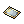

Cards (18)
Jump to navigation
Jump to search
Below is a summary of all cards introduced in Episode 18 - Direction of Prayer.
| Card | Compound on | Source | Effect |
|---|---|---|---|
 Ash Toad Card Ash Toad Card
|
Accessory (Left) | (65x Ash Toad) |
|
| Armor |
(70x Rakehand) |
| |
 Spark Card Spark Card
|
Garment |
(10x Spark) |
|
 Hot Molar Card Hot Molar Card
|
Weapon | (60x Hot Molar) |
|
 Volcaring Card Volcaring Card
|
Footgear | (35x Volcaring) |
|
 Lava Toad Card Lava Toad Card
|
Accessory (Left) | (25x Lava Toad) |
|
 [MVP] Burning Fang Card [MVP] Burning Fang Card
|
Footgear | (1x Burning Fang) |
|
 Ashhopper Card Ashhopper Card
|
Accessory (Left) | (50x Ashhopper) |
|
 Ashring Card Ashring Card
|
Weapon |
(70x Ashring) |
|
 Grey Wolf Card Grey Wolf Card
|
Accessory (Left) |
(35x Grey Wolf) |
|
 Tumblering Card Tumblering Card
|
Footgear | (60x Tumblering) |
|
 Firewind Kite Card Firewind Kite Card
|
Accessory (Left) | (35x Firewind Kite) |
|
 Phantom Wolf Card Phantom Wolf Card
|
Accessory (Right) | (25x Phantom Wolf) |
|
 [MVP] Schulang Card [MVP] Schulang Card
|
Armor | Villa of Deception (1x Schulang) |
|
|  [MVP] Twisted God Card | Armor | Villa of Deception (1x (Twisted) God Freya) |
|